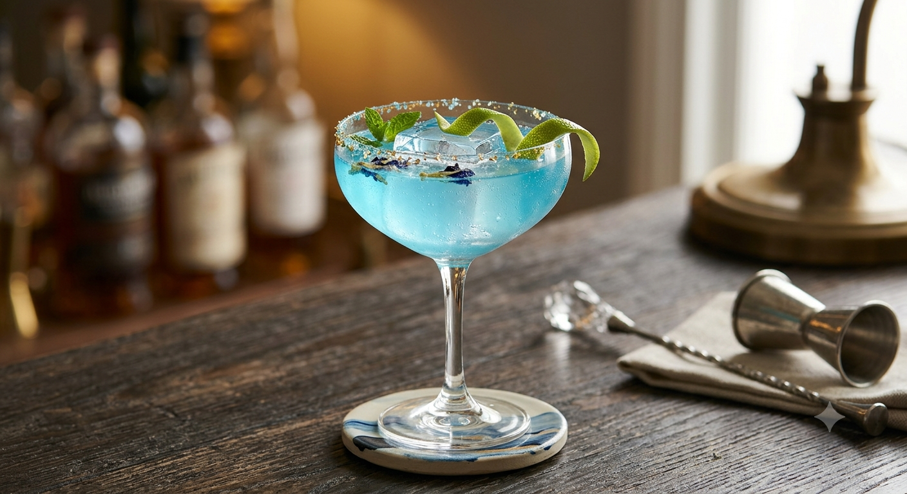

世界の樽生ビール 12TAP
× 独創的な欧州料理
クードヌフの魅力を一度に味わえる、特別なおすすめ三品を準備中。
ぐつぐつ煮立った特製ガーリックオイルと大ぶり海老の、看板メニュー。
12タップから選べる、アヒージョに最も合う一杯をスタッフがセレクト。
食事の締めを華やかに彩る、他では味わえない独創的なオリジナルデザート。
※近日中にご予約時のオプションとして導入予定です。
まずは席のみ予約ですぐ体験する「鳥居シェフのアヒージョは一味違います。ワインもお料理も間違いないお店です。」
「女子会で利用しましたが、お料理全部美味しかったです✨特別な日にまた行きたい。」
「予約してよかった」と言っていただける、
特別な一皿と一杯をご用意してお待ちしております。
盛岡市大通2丁目7−20 ウエダビル 4F
18:00〜4:00 (定休日:月曜)
エスカレーターで4階までお越しください。隠れ家のような空間が広がっています。